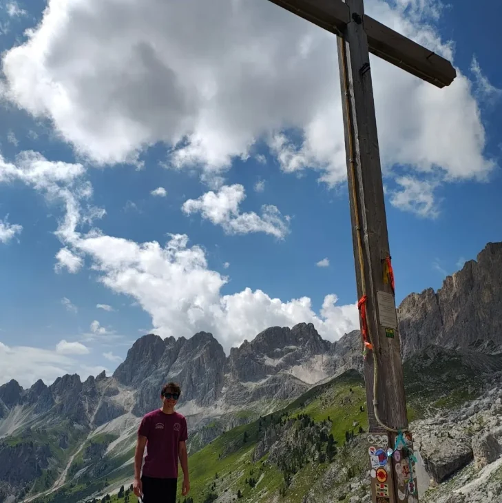

Federico Malservigi
Studio Informatica per il management all'Università di Bologna. Mi occupo soprattutto di dati: da febbraio a maggio 2026 ho fatto uno stage da data analyst in Bitbang, nel team Data Science, con Python, Pandas e SQL. Scrivo anche app Android in Kotlin e progetti in Java, JavaScript e PHP, spesso in gruppo con i compagni di corso.

Ciao, sono Federico.
Sono di Bologna e studio Informatica per il management all'Unibo. Imparo soprattutto facendo: progetti d'esame in gruppo e qualche app per conto mio. Fuori dall'università faccio scherma e Krav Maga e, quando posso, vado in montagna.
- Italiano · madrelingua
- Inglese · B2
- Spagnolo · A2
- Patente B
Studi ed esperienze
Liceo Scientifico E. Fermi
Diploma di scuola secondaria superiore, a Bologna.
Informatica per il management
Università di Bologna: programmazione, basi di dati, sistemi, statistica e gestione dei progetti.
Data analyst · Bitbang
Stage nel team Data Science: analisi dei dati di vendita di un e-commerce.
Cosa uso
Analisi
Python con Pandas e NumPy, SQL, MySQL e MongoDB.
App e web
Kotlin, Java, JavaScript, HTML e CSS, PHP, GWT. API REST con OpenAPI.
Strumenti
Git, GitHub e GitLab, Docker, Maven. Agile e Scrum. XML, JSON e YAML.
Sport, scout e volontariato
Scherma e Krav Maga
Scherma dal 2017, con un terzo posto al torneo regionale del 2019. Oggi anche un corso di Krav Maga tradizionale a Bologna.
Scout AGESCI
Nel gruppo Bologna 18 dagli 8 anni alla fine del liceo: trekking, arrampicata, bici e i servizi dell'associazione.
Caritas e AVIS
Con la Caritas ho preparato e consegnato la spesa a famiglie in difficoltà. Sono donatore di sangue AVIS.
Finanza personale
Seguo ETF e obbligazioni e cerco di capire i numeri dietro un portafoglio.